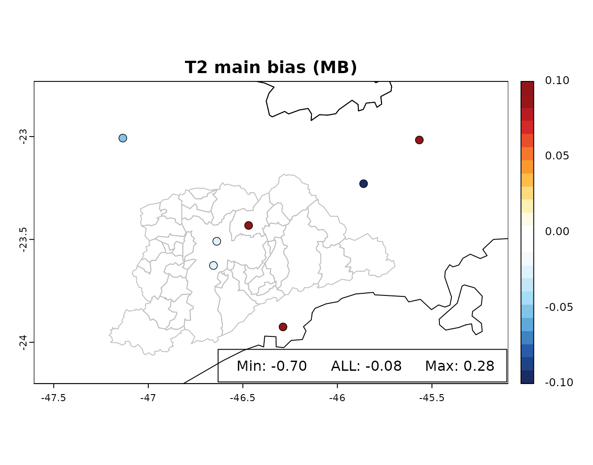

The recommended workflow to evaluate your model results will include 4 steps:
Pre-processing of observations
Pre-processing of model output
Model Evaluation
Visualization
The exact steps needed for evaluation will be different for different models, different observation data-sets, and different variables. However, in this vignette is presented an example of evaluation of temperature at surface level (T2) from WRF-Chem for a simulation at 3-km of resolution for January 2016 using data from METeorological Aerodrome Report (METAR).
1 - Pre-processing of observations: We are using the r-package
riem to download METAR data:
start_date <- "2016-01-01"
end_date <- "2016-02-01"
sites <- c("SBGR","SBKP","SBMT","SBSJ","SBSP","SBST","SBTA")
METAR <- data.frame(date = seq.POSIXt(as.POSIXct(start_date),
as.POSIXct(end_date),
by = "hour"))
for(site in sites){
cat('Trying to download METAR from:',site,'...\n')
DATA <- tryCatch(riem::riem_measures(station = site,
date_start = start_date,
date_end = end_date,
elev = FALSE,
latlon = FALSE),
error = NULL)
if(is.null(DATA)){
cat('fail to download, loading some data ...\n')
METAR <- readRDS(paste0(system.file("extdata",package="eva3dm"),
"/METAR_MASP_jan_2016.Rds"))
break
}
DATA <- data.frame(date = DATA$valid,
T2 = DATA$tmpf)
names(DATA) <- c('date', site)
METAR <- merge(x = METAR,
y = DATA,
by = "date",
all = T,
sort = TRUE)
}
#> Trying to download METAR from: SBGR ...
#> Trying to download METAR from: SBKP ...
#> Trying to download METAR from: SBMT ...
#> Trying to download METAR from: SBSJ ...
#> Trying to download METAR from: SBSP ...
#> Trying to download METAR from: SBST ...
#> Trying to download METAR from: SBTA ...Lets check if the observations are ok
plot(METAR$date, METAR[,2], ty = 'l',xlab = '',ylab = 'T2', main = 'METAR OBS')
head(METAR)
#> date SBGR SBKP SBMT SBSJ SBSP SBST SBTA
#> 1 2016-01-01 00:00:00 75.2 71.6 75.2 77.0 77.0 NA NA
#> 2 2016-01-01 01:00:00 75.2 NA 75.2 77.0 75.2 NA NA
#> 3 2016-01-01 01:01:00 NA NA NA NA 75.2 NA NA
#> 4 2016-01-01 02:00:00 73.4 71.6 NA 77.0 73.4 NA NA
#> 5 2016-01-01 03:00:00 73.4 71.6 NA 75.2 71.6 NA NA
#> 6 2016-01-01 04:00:00 71.6 69.8 NA 75.2 NA NA NAIn this case the temperature units needs to be converted from
Fahrenheit to Celsius and the data needs to be grouped or averaged in
time, in this case we are using the hourly() to perform a
evaluation against hourly data.
METAR[,-1] <- 5/9 * (METAR[,-1]-32)
METAR <- hourly(METAR)
#> processing hourly data ...
plot(METAR$date, METAR[,2], ty = 'l',xlab = '',ylab = 'T2', main = 'METAR processed OBS')
head(METAR)
#> date SBGR SBKP SBMT SBSJ SBSP SBST SBTA
#> 1 2016-01-01 00:00:00 24 22 24 25 25.00000 NA NA
#> 2 2016-01-01 01:00:00 24 NA 24 25 24.00000 NA NA
#> 3 2016-01-01 02:00:00 23 22 NA 25 23.00000 NA NA
#> 4 2016-01-01 03:00:00 23 22 NA 24 22.00000 NA NA
#> 5 2016-01-01 04:00:00 22 21 NA 24 22.00000 NA NA
#> 6 2016-01-01 05:00:00 22 21 NA 23 21.33333 NA NAFor the next step a site-list with latitude and longitude of each surface station is needed, a list of all METAR stations is available in eva3dm package.
site_list <- readRDS(paste0(system.file("extdata",package="eva3dm"),"/sites_METAR.Rds"))
head(site_list)
#> station_name lat lon elev begin end
#> EHAK A12-CPP HELIPAD OIL PLATFORM 55.39917 3.81028 50 2009-02-09 <NA>
#> EKYT Aalborg 57.09639 9.85056 3 1940-04-01 <NA>
#> EKAH Aarhus 56.30833 10.62556 25 1972-12-31 <NA>
#> OIAA Abadan 30.36667 48.25000 11 1943-11-30 <NA>
#> OISA ABADEH 31.18333 52.66667 2004 1977-12-01 <NA>
#> UNAA Abakan 53.74000 91.38500 245 1999-01-14 <NA>2 - Pre-processing of model output: The model output are large files
and does not allow the direct comparison with observations. The package
provides a function that extracts time-series from geographic locations
from a site-list. The function extract_serie() extracts the
time-series from a list of files and saves the output in R file (in this
example we are reading the R file generated by
extract_serie()). An finally, the temperature extracted
from the model is converted from Kelvin to Celsius.
## to extract time-series from WRF-Chem model
## wrf_files <- dir(pattern = "wrfout_d03")
## extract_serie(filelist = wrf_files, point = site_list, variable="T2", prefix="model.d03", field="3d")
model_d03 <- readRDS(paste0(system.file("extdata",package="eva3dm"),"/model.d03.T2.Rds"))
model_d03[-1] <- model_d03[-1] - 273.15NOTE: to extract time-series from other models (not WRF or WRF-Chem),
the arguments latitude and longitude from the
function extract_serie() need to match the name of these
variables for latitude and longitude in the model output. If the model
do not include the Times variable, use_TFLAG must be set to
TRUE to extract and convert the time from TFLAG variable
(for example for CMAQ / CAMx models) or use_datesec must be
set to TRUE to extract and convert time from the datasec
variable (for example for WACCM / CAM-Chem models).
3 - Model Evaluation: The functions eva() can be used to
calculate the statistical indexes from time-series for individual
stations or all stations combined.
table <- data.frame()
for(site in sites){
table <- eva(mo = model_d03, ob = METAR, site = site, table = table)
}
#> SBGR has 734 valid observations
#> SBKP has 735 valid observations
#> SBMT has 513 valid observations
#> SBSJ has 740 valid observations
#> SBSP has 737 valid observations
#> SBST has 432 valid observations
#> SBTA has 407 valid observations
table <- eva(mo = model_d03, ob = METAR, site = 'ALL', table = table)
#> combining all sites...
#> SBGR(ok) SBKP(ok) SBMT(ok) SBSJ(ok) SBSP(ok) SBST(ok) SBTA(ok) ...
#> total: 7 stations with valid data, 0 stations not included
#> ALL has 4298 valid observations
print(table)
#> n Obs Sim r IOA FA2 RMSE MB
#> SBGR 734 22.63965 22.74450 0.7775355 0.8770425 1 2.496525 0.10485920
#> SBKP 735 23.91111 23.85882 0.7727177 0.8686615 1 2.736654 -0.05228941
#> SBMT 513 23.87232 23.84531 0.7422773 0.8552605 1 2.702797 -0.02701357
#> SBSJ 740 23.76284 23.05983 0.7844412 0.8702301 1 2.667141 -0.70301015
#> SBSP 737 22.50583 22.48103 0.7682679 0.8676724 1 2.506979 -0.02480130
#> SBST 432 25.99113 26.09150 0.7568891 0.8657718 1 2.110475 0.10037735
#> SBTA 407 25.49631 25.77835 0.7167453 0.8430608 1 2.912318 0.28203548
#> ALL 4298 23.78202 23.69927 0.7817265 0.8784392 1 2.601999 -0.08275445
#> ME NMB (%) NME (%)
#> SBGR 1.888910 0.4631662 8.343374
#> SBKP 2.116666 -0.2186825 8.852229
#> SBMT 2.086712 -0.1131585 8.741136
#> SBSJ 2.104004 -2.9584436 8.854178
#> SBSP 1.905254 -0.1101994 8.465600
#> SBST 1.682075 0.3861985 6.471727
#> SBTA 2.318141 1.1061814 9.092063
#> ALL 2.011160 -0.3479706 8.4566424 - Visualization: The function overlay() can be used to
plot the results from eva() on a map. However, first the
data need to be georeferenced using %at%.
spatial_table <- table %at% site_list
#> georeferencing table at site_list
overlay(spatial_table, z = 'MB', main = 'T2 main bias (MB)',expand = 1.6,lim = 0.1)
masp <- terra::vect(paste0(system.file("extdata",package="eva3dm"),"/masp.shp"))
BR <- terra::vect(paste0(system.file("extdata",package="eva3dm"),"/BR.shp"))
terra::lines(BR)
terra::lines(masp, col = 'gray')
legend_range(spatial_table$MB,y = table["ALL","MB"])
The WRF-Chem temperature in this example showed a very low MB, except
for the SBSJ station (MB=-0.7), which is in the criteria for acceptable
performance (|MB| < 0.5) and the criteria for evaluation for complex
terrain for the SBSJ case (|MB| < 1.0). Another criteria for
temperature are IAO > 0.8 and ME < 2.0 (ME < 3, for complex
terrain), in general the model presented a reasonable performance for
temperature. More information and references can be found on the
documentation of stat() function.